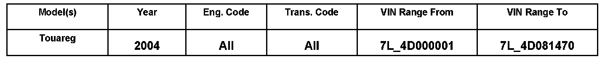
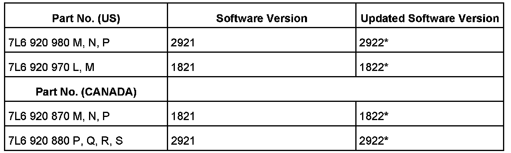
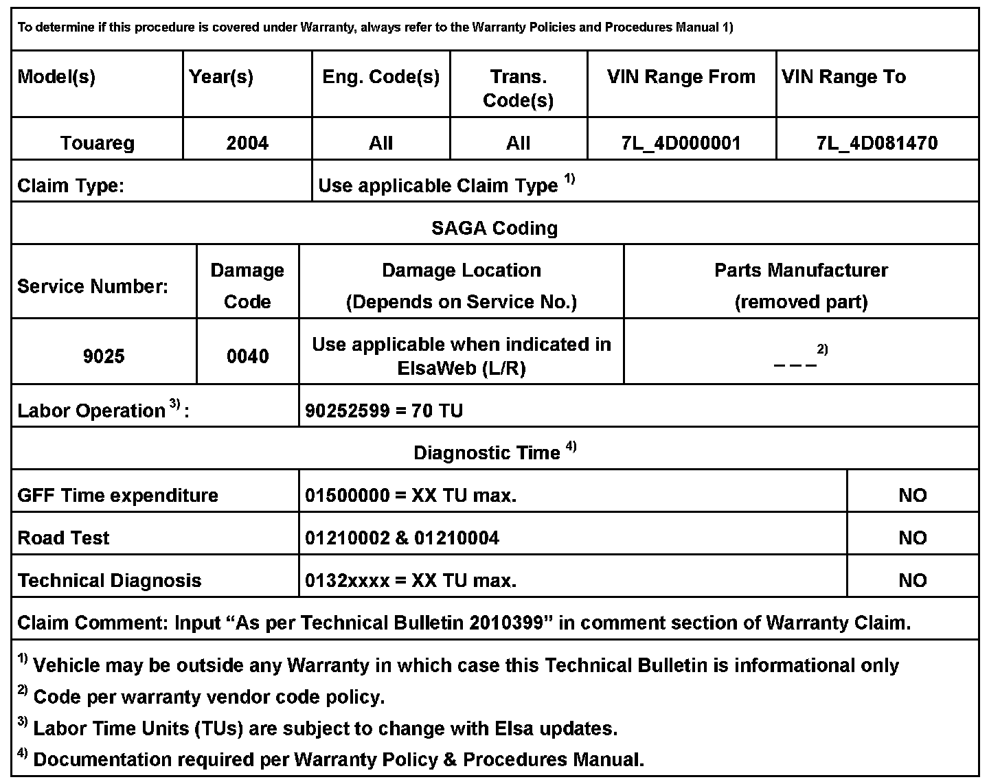
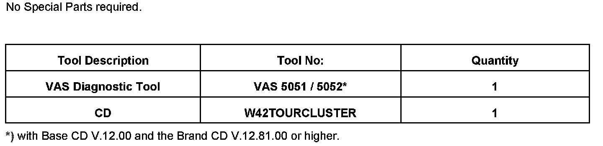

Instruments - Clock Runs Too Fast/Gains Time: Overview
90 08 02January 23, 2008
2010399
Supercedes T.B. Group 90 number 05-06 dated November 9, 2005 due to expiration of Q5 product update.

Affected Vehicles
Condition
Instrument Cluster, Clock Runs Too Fast
Technical Background
Instrument cluster clock gains approximately 30 seconds per day.
Tip:
Updated instrument cluster programming requires two cycles to complete
Follow instructions completely.
Affected instrument cluster OE Part Nos. (NOT replacement Part Nos.):
Production Solution

Condition is corrected by an update of the instrument cluster software via flash CD.

Warranty

Required Parts and Tools
No special Tools Required
Additional Information
All part and service references provided in this Technical Bulletin are subject to change and/or removal. Always check with your Parts Dept. and Repair Manuals for the latest information.